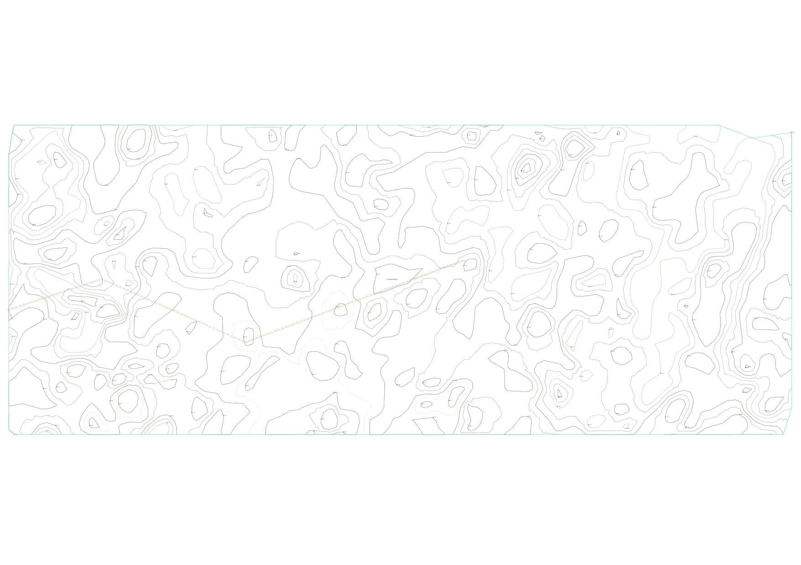

Perancangan geometrik jalan arteri
Menarik trase jalan arteri di atas peta kontur, lalu merancang alinyemen horizontal dan vertikal: jarak pandang, jari-jari minimum, lengkung peralihan, superelevasi, dan jenis tikungan.
- Acara atau tempat
- Tugas besar Perancangan Geometrik Jalan, Universitas Jambi
- Tahun
- 2025
- Peran saya
- Perancang (tugas individu).
- Hasil
- Trase di peta kontur, tikungan S-C-S, VR 80 km/jam
- Perangkat lunak
- AutoCAD, Global Mapper, Microsoft Excel
- Jenis
- Perhitungan, Gambar/DED
Trase dan alinyemen
Titik awal di elevasi 42,001 m dan titik akhir 42,829 m. Kecepatan rencana 80 km/jam, superelevasi maksimum 8 %, panjang bagian lurus maksimum 3.000 m (medan datar). Tikungan 1 (Rc 300 m) dan tikungan 2 (Rc 358 m, Δ 59,141°, Ls 67 m, e 7,9 %) memenuhi syarat Spiral–Circle–Spiral.

